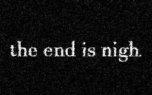

Havent you heard? It's a pure coincidence it ended up here. Yet a perfect one. A perfect place to spread, Files always being exchanged, Servers being joined, A pure place of incubation.
The Truth:
They wont just be in minecraft soon.
Do you hear it?
The wonderful rumbling?
In the twenty-third cycle of this sector, The moon will leave its host and will exit its one-rotation incubation phase. And it will appear in your world. It will rightly gain its new host, As it shall.